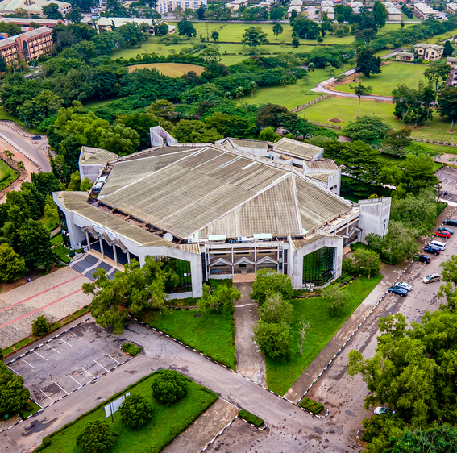
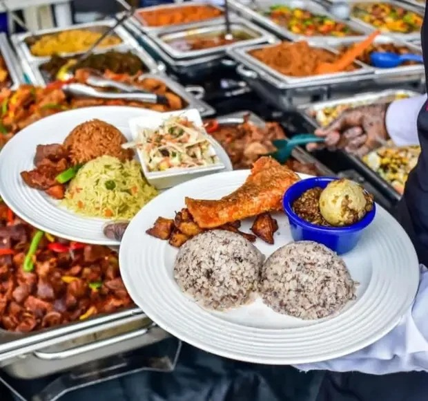
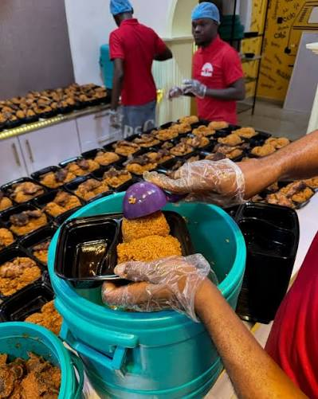

01 / OUR WORK
Reduce waste, feed people.
No Student Left Hungry.
No Student Left Hungry.
No Family Left Behind.
Retrieve. Repackage. Redistribute.
Together, we are touching lives:
2000+
Packs of food retrieved
2000+
People fed
1
Events covered
Thursday, October 29, 2026
00
Days
:
00
Hours
:
00
Mins
:
00
Secs

OUR MISSION
The food is there.
The food is there.
We make the connection.
To integrate a food redistribution scheme across universities and food-centered businesses from matriculation ceremonies to catering services to reduce waste and help underserved communities.
See how we work
THREE WAYS WE SHOW UP
Close to home. Far reaching care.
THE VISION
Every event ends.
Every event ends.
Our work begins.
For FAP to be integrated into all food-related businesses, restaurants, and university ceremonies. After every event clocks out, a FAP structure should be there to collect, repackage, and redistribute good leftover food to where it is needed.
See how we work
THERE’S ENOUGH TO SHARE.
Help good food
Help good food
go further.
A little support. A meal that matters.